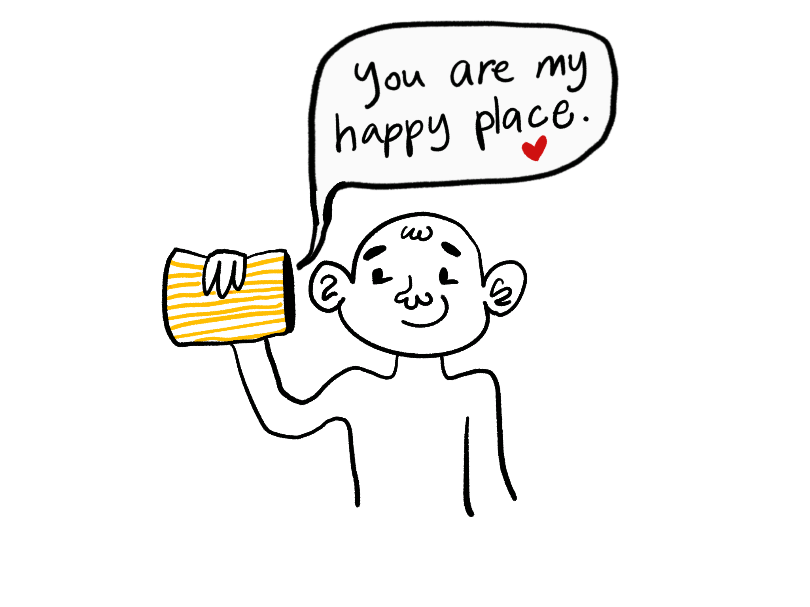

COLLEGE PROJECT
Gappe ka Dabba
A tangible interative device which treats sound as an object that can be 'sensed'



COLLEGE PROJECT
Gappe ka Dabba
A tangible interative device which treats sound as an object that can be 'sensed'
.gif)
.gif)
.gif)
01
Record Sound
Open and store your voice..gif)

02
Play sound
Open and tilt the box to play.gif)

03
Delete Sound
Open and upside down the box and shake the sound out.gif)

04
Feedback of Sound Presence
You can hear the mumbling of sound in the box when you shake it.gif)

05
Error prevention feedback before deletion
Hear the sound (through volume reduction) pouring out as you tilt the open box upside down.gif)


Differentiating ambient sound with voice intended to be recorded.
Data transfer from the box to the phone in tangible ways.
Error prevention for sound deletion. Illusion of ‘sound might spill’ by reducing the volume as the box tilts upside down.
Rusting/aging (adding glitches, playing with the volume, changing texture, adding noise) of sound as it plays again and again so as to restore the organic nature of sound to the ‘recorded’ sound.